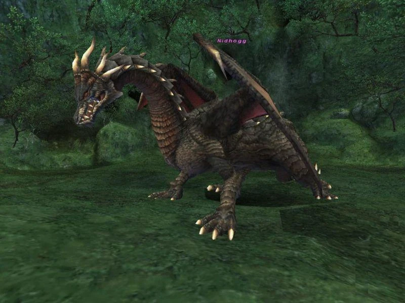

Level 75 reference · Zenith rules
|
Job: Notorious Monster |
 Image source |


|
Zone |
Level |
Drops |
Steal |
Spawns |
Notes |
|
90 |
1 |
A, T(S) | |||
|
HP = Detects Low HP; M = Detects Magic; Sc = Follows by Scent; T(S) = True-sight; T(H) = True-hearing JA = Detects job abilities; WS = Detects weaponskills; Z(D) = Asleep in Daytime; Z(N) = Asleep at Nighttime | |||||
Notes:
- Lottery Spawn from Fafnir after 3 consecutive days.
- Nidhogg TP Attacks:
- Hurricane Wing - A Wind based wing attack that causes a severe but short duration Blind effect, this AoE attack also removes Blink and Utsusemi.
- Horrid Roar - Removes all positively induced status effects including food on a single target. It does not reset Hate.
- Absolute Terror - Inflicts Terror on to a single target in which the player becomes immobile for a short period.
- Dragon Breath - A Frontal Fire based AoE attack that causes significant damage. Avoidable by strategically positioning the alliance at the base of Nidhogg's two front feet.
- Spike Flail - An extremely powerful AoE attack that inflicts heavy damage to all within range, generally resulting in a wipe.
- Spike Flail occurs only if Nidhogg has over 100%TP and is attacking with its tail.
- Nidhogg has a "2 Hour" ability that can be used at will. Noticeable by the usual 2 Hour dust cloud animation, this ability enhances Nidhogg's attack, defense, and magic defense drastically for about 30 seconds. Denoted by the wings being raised in the air, as opposed to their normal position at his sides.
- Unlike Fafnir, all of Nidhogg's AoE attacks inflict damage to any player in range including people outside of alliance, this includes Spike Flail.
- At least one Abjuration will drop 100% of the time.
Stategy Notes:
- Positioning your alliance at the base of Nidhogg's two front feet is crucial to prevent Spike Flail, and withstanding damage from Dragon Breath.
- It is highly recommended to avoid the use of AoE Spells of any kind, as it may target the surrounding Darters.
- It is recommended to avoid the use of DoT spells as Nidhogg can be put to Sleep allowing time to recover, if necessary (usually from repeated Hurricane Wings.)
- All mages should upkeep Stoneskin at all times, and at least one member in each party should have White Mage as a Support Job to Curaga party members after an AoE attack from Nidhogg.
- Highly resistant to Fire and Ice Elemental Magic, although Water and Lightning are effective.
- Nidhogg is extremly resilient to Sleep, therefore Elemental Seal is usually required, beware as Nidhogg quickly builds resistance to Sleep.
- Nidhogg will Rage after 60 minutes of being engaged.
Adapted from Eden Wiki: Nidhogg · Contributors and history · CC BY-SA 4.0. Revision 1974. Layout, links and optional background text adapted for Zenith.